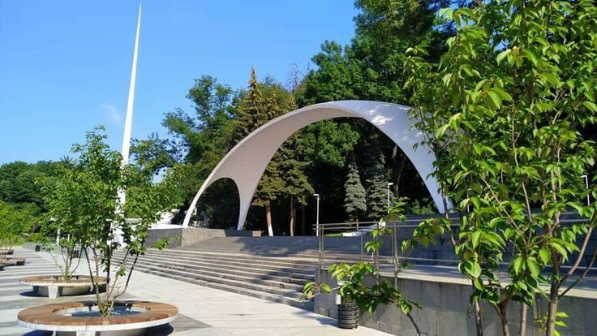

Вінницька центральна арка
Арка Центрального парку ім. Леонтовича — це архітектурна споруда, розташована в Центральному парку культури і відпочинку ім. Леонтовича в місті Вінниця, Україна. Вона є одним із символів міста і має історичне та культурне значення.
Весною квітуть пишні сорти японських вишень при вході у Центральний парк імені Миколи Леонтовича на мапі